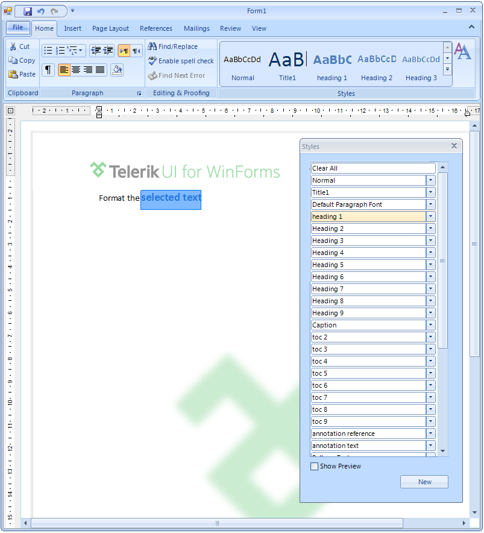
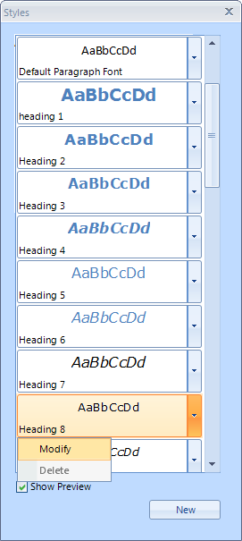
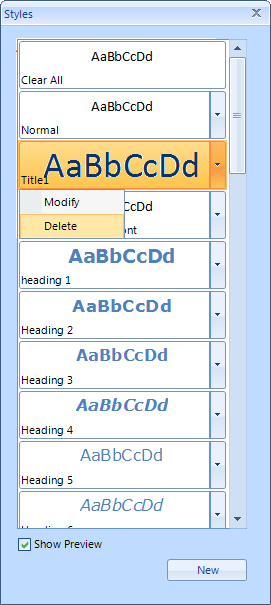

Applying Styles
The topic explains how to apply, add, modify and delete styles using the predefined UI of RadRichTextEditor.
Apply Style
Applying a Style from the Quick Styles gallery is easy and intuitive. The only thing you should consider is where the caret is
located.
In the image above the firs paragraph has style applied only to part of the text - the selection. The rest of the
text has the default Normal style.
As opposed to that, positioning the caret somewhere in the paragraph will style it.
It is also possible to apply a style using the Styles dialog as shown in the picture below.
Add Style
Other than using the API to declare a style, you can also use the UI.
More info on how to create a style from code can be found in the
[
Styles article
](/richtexteditor-/features/richtexteditor-styles)
Clicking the New button on the Styles dialog invokes the Create new style from
formatting
dialog where you can specify the properties of the new style:
Name - corresponding to the Name property of the StyleDefinition;
Style type - the Type of the style;
Style based on - specifies that the current style inherits the StyleDefinition set to this property.
Corresponds to the BasedOn property;Style for following paragraph - specifies the style that will be applied to a newly created paragraph
following a paragraph with this style. The respective property is NextStyleName;
You can also specify the wanted formatting as the dialog slightly changes depending on the type of style you are defining.
The checkbox on the bottom - Add to Quick Style list, allows you to add custom styles to the Quick
Styles for easier access.

Modify Style
All styles can be modified using the Modify option in the Styles dialog.
This will change the formatting of the style as well as the formatting of document elements that already have this style applied.
As all pictures in the Styles dialog and in Quick Styles are dynamically populated, a snapshot of the new look will
be included immediately.
Delete Style
The predefined set of Styles in RadDocument cannot be deleted using the UI. Only the custom styles you've created can be removed using the
Delete option in the styles dialog.

It is possible to remove the default styles from the Quick Styles by using the Modify option and unchecking the
Add to Quick Styles checkbox.